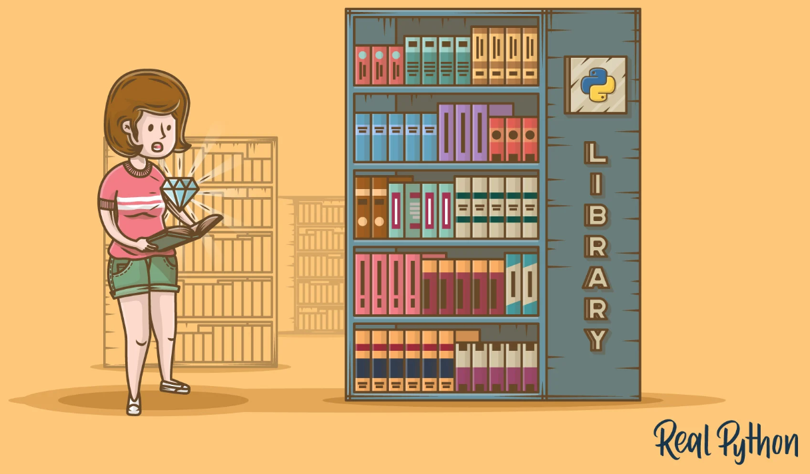
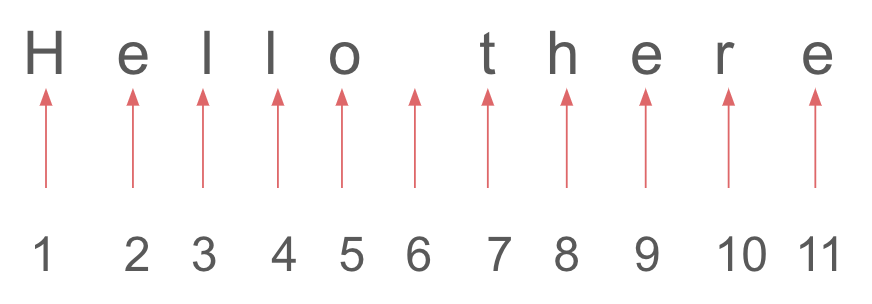
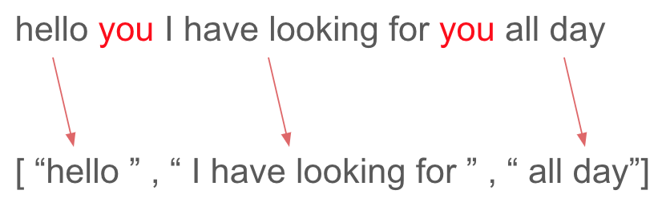
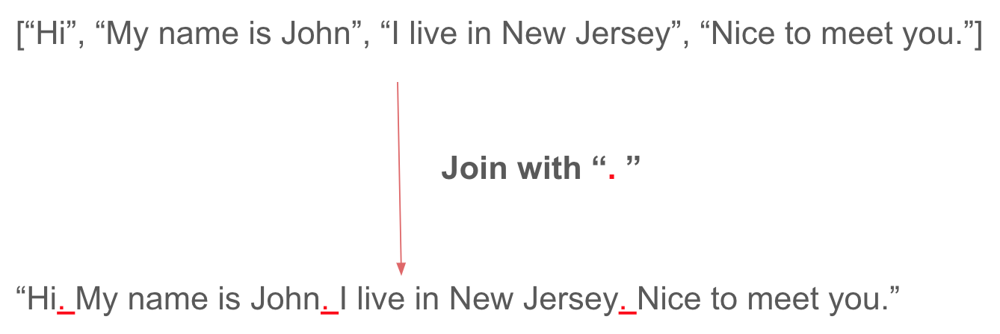
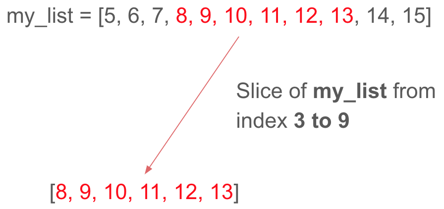

Using Python better
In the previous chapter we briefly talked about the internal (built-in) objects of Python and their functions. In this chapter we dive deeper into these objects and talk more about the functions from these objects.
We are going to do some data processing at the end of this chapter. This means that you will write functions that recieve some data, from their input arguments, and produce some output, which they will return. For that reason, we start with learning more about Python functinos and their input arguments.
Functions
We learned about the functions earlier in Chapter 2. Remember that functions could receive inputs and return outputs. For example
# Simple functions
def subtract(a, b):
# This is a simple function that subtracts two numbers
return a - b
# This is how we use this function.
answer = subtract(8, 5)
print(answer)
Named arguments
So far we have mostly used the functions like we did in the above example: inserting the inputs to the function (which we call arguments or parameters) in the order they are expected. There is another very common way for doing this. You can directly assign values to the input arguments by their names. For better illustration of that try to guess the output of the following code, then try it in Python.
def subtract(a, b):
# This is a simple function that subtracts two numbers
return a - b
# Using function with named arguments
answer = subtract(b=8, a=5)
print(answer)
Default arguments
Python allows you to have functions with default values for their arguments. This means that you don't have to always provide all the arguments to a function. In fact, you have been usig these functions since the beginning without knowing it. Check the arguments for print function here.You can also define your own functions with the default values.
def subtract(a, b=0):
# This is a simple function that subtracts two numbers
# The second number has a default value.
return a - b
# This is how we use this function.
print(subtract(12))
print(subtract(a=5))
print(subtract(a=5, b=2))
5
3
String
We are familiar with String types from Chapter 1. We have used some simple functions from the String objects, for example, lower and upper, which return the same String with all its characters in lower or upper case, respectively. We are going to learn more useful functions from the String object here.
Substring
To understand many of the functions that work with String objects in Python, we first need to know what is a substring. A substring is a contiguous part of a String that can be a String by itself. For example, "side" is substring of "residence". Similarly, "ve ca" is substring of "I have cats and they are cute." But as far as python knows "new" is NOT a substring of "New providence" because for Python "new" and "New" are two different strings.
String index
So far we have seen Python strigns as a single entity. But in fact each string is like a list of characters. As any other list, the objects inside it have index (Don't forget that this index starts from 0, not 1).
Therefore, you can use the same indexing number we used for lists in Python with strings. Try figuring out the output of the following code:
# String index
# Indexing for a list
my_list = [2, 6, 7, 8, 9]
print(my_list[3])
my_string = "carrots"
print(my_string[5])
t
count
Use this function for counting the number substring in a Python string.
# Using the count function
S = "I can not have an apple."
# This will count the number of "an" substrings in String S
print(S.count("an"))
find
This function returns the index of the first occurance of a substring inside your string, if the substring exits. If it doesn't, it returns -1.# Using the find function
S = "I can not have an apple."
print(S.find("have"))
print(S.find("cat"))
-1
replace
As the name suggests, this function replace one substring in your string with anothre. Going through the following example will clarify this:
# Replacing substrings
S = "I have a dog. I think dogs are the best."
# We are creating a new string after replacing the substring
S2 = S.replace("dog", "cat")
print(S2)
split
This function is different from all the string object functions we talked about so far. It returns a list of strings made from splitting the original substring by some substring. If the substring does not exist in the original string, then it returns the original string as single item in the retruned list.
Pay attention to the following example of how to use the split function.
# Splitting the string into a list of its substrings
splitted_parts = "cat, dog , chickens , good,boy".split(",")
print(splitted_parts)
Notice how we use the string function differently in the example below? So far we have been creating a string object first, and then calling that with the function that we needed. But we don't have to do that; we can directly use any of these functions on a string. In fact what happens here is that Python creates an anonymous object for you.
join
This function is the opposite of the split function. It joins the strings inside a lits into a single string, by putting another string between them. So in summary it turns a list of strings into a single string.
An example of using join function. See how we used it in two different ways this time too. Once with creating an string and using it for join, and the other time with using a string directly. The results are exactly the same. Choose based on your own preference.
# Joining strings
my_animals = ["cats", "dogs", "squirels"]
# method 1
join_string = " are cute. "
print(join_string.join(my_animals))
# method 2
print(" are cute. ".join(my_animals))
cats are cute. dogs are cute. squirels
List
Now let's talk about another important built-in object in Python: list. We already introduced append and count. Remember that the first one adds an element to the end of the string, and the latter counts the number of occurances of an element inside the list. Have a quick look at chapter 3 to refresh your mind on these two functions.
# list functions: append and count
my_favorite_numbers = [5, 6, 3, 4]
# append
my_favorite_numbers.append(6)
print("My favorite numbers are", my_favorite_numbers)
# count number 6s in the list
print(my_favorite_numbers.count(6))
2
Slicing a list
We know how to get one element from a list. But what if we wanted to get some contiguous elements altogether? In other words, you wanted to have a new list from the ranges of indexes of your original list. This is what we call a slice from the original list. See the image below for illustration of the slice.
It is import to remember that in Python (as well as many other languages) when you have two numbers for the start and the end of your slice, the first one is inclusive (meaning the element in that index is part of your slice) and the second one is not. And of course, don't forget that we start counting from 0 in computer science.
If you tried the previous excerise of writting your own slicer function, you should know that Python gives you an easier way of doing this. It is very similar to when we were getting a single element from our list. You just need to use a : symbol between two indexes. For example, my_list[3:5] gives you a new list that incldues all the items from 3 to 5.
If your slice starts from the beginning of the list, you don't need to include 0, you can just write my_list[:5] in your code. Python understands that you want everything in your list up to, but not including the item at index 5. Similarly, if you want to your slice to end of your list, you don't need to include the last index. Instead of that you can simply write something like my_list[2:], which Python understands as you asking it to make a slice from the item at index 2 all the way to the end of the list.
# Making different slices
my_favorite_numbers = [5, 6, 3, 4, 13, 23, 17]
# Some middle slice
print(my_favorite_numbers[3:6])
# A slice from the beginning
print(my_favorite_numbers[:5])
# A slice to the end
print(my_favorite_numbers[3:])
[5, 6, 3, 4, 13]
[4, 13, 23, 17]
Joining two lists
Imagine you have two lists and want to create another list that contatins the two of them. In other words, you want to have a new list that is made from adding one of them at the end of the other one. This is what we call concatenation in computer science. You can easliy do this by putting a + symbol between two lists. This will generate a new list that is made from all the elements in the first list followed by the elements in the second.
# concatenating lists
my_numbers = [2, 3, 4, 5]
my_other_numbers = [3, 6, 8, 9, 12, 78]
# concatenating two lists
all_my_numbers = my_numbers + my_other_numbers
print(all_my_numbers)
pop
With Python poping is the opposit of appending: it removes the last element from your list and returns it. So, this element is no longer in your lists after it was popped from the list.
# poping from a list
my_numbers = [2, 3, 4, 5]
poped_number = my_numbers.pop()
print("The poped number was", poped_number)
print("Your list after poping is", my_numbers)
Your list after poping is [2, 3, 4]
Reversing a list
You can easily reverse the original order of iterms in your list using the reverse function. Unlike many other functions we tried before this function does not return a new object (in this case a list). Instead, when you call this function on a list object it reorders elements in your list in-place. Doing something in-place means that you do not create a new object, instead you change the current one as is. If you notice, this function doesn't return anything either.
# Reversing items in a list
my_numbers = [2, 3, 4, 5]
my_numbers.reverse()
print(my_numbers)
Sorting a list
Sorting a list is putting its items in a order from the lowest to highest. In Python you easily do this with any list using the sort function. Similar to the reverse function sort is working in-place. So it does not return a new list, it just rearranges the items around your list.
# Sorting items in a list
my_numbers = [6, 2, 8, 9, 4, 1]
my_numbers.sort()
print(my_numbers)
Dictionary
Time to explore another important built-in obejct in Python: dictionary. Remember that dictionaries are very similar to lists. Both lists and dictionaries are for keeping a colleciton of other objects in them. Their main difference is that lists are using the index (an integer value) to find objects in them, whereas dictionaries use keys. Python just counts where your items in your list is and calls it the index, but in dictionaries you decide what the key is going to be. Here is another reminder of how dictionaries work.
# Dictionaries and keys
game_score = {'Jenny': 6, 'Peter': 3, 'Alice': 4}
print("Jenny's score is", game_score["Jenny"])
In this dictionary, named game_score, we keep track of the score in an imaginary game. Any time we wanted to read or change someone's score, we use that person's name, which we defined as the key for our dictionary, to access it.
Getting the keys and values
So far we have been interacting with Python dictionaries one item at a time: we were either, reading, adding or changing a single element from the dictionary. Another important point was that we had to know what were the keys in the dictionary. But what if we didn't know that? Here is where we need to request for getting the keys or values in the dictionary. Luckily Python has built-in functions in its dictionary objects that helps us with that.
keys
This functions returns all the keys in a dictionary. The easy way to use the returned values is to run it with a for loop.
# Looping over dictionary keys
game_score = {'Jenny': 6, 'Peter': 3, 'Alice': 4}
for k in game_score.keys():
print(k)
Peter
Alice
values
The values function is very similar to the keys function. But, as the name suggests, it returns the values in the dictionary instead of the keys.
# Looping over dictionary keys
game_score = {'Jenny': 6, 'Peter': 3, 'Alice': 4}
for v in game_score.values():
print(v)
3
4
Checking if a key is in a dictionary
If you want to check whether a key already exists in a dictionary or not, use the in keyword simiar to what you see in the following example.
# Checking a key inside a dictionary
game_score = {'Jenny': 6, 'Peter': 3, 'Alice': 4}
if 'Bob' in game_score:
print("Bob's score is", game_score["Bob"])
else:
print("Bob does not have a score in this game.")
Fun fact, you can use the in keyword to check the content of lists too.
# Checking a item inside a list
my_numbers = [5, 7, 9, 13]
if 7 in my_numbers:
print("The list of numbers includes 7.")
else:
print("7 is not in the list of numbers.")